Photo credits
Where the pictures come from.
Every picture on this site was generated for this demo. None of them shows Skimwell's work, because Skimwell does not exist, and none of them is a photograph of a real house, a real job or a real person.
| What it shows | Where it came from | Used for | |
|---|---|---|---|
 | A plasterer laying a coat of finish onto a wall with a trowel, used on the home page, the skimming page and the work page | Generated for this demo | Illustrative only |
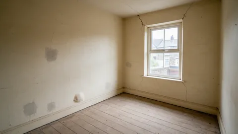 | The 'before' half of the slider: a tired room with a crack from the window, filler patches and a bulge near the skirting | Generated for this demo | Illustrative only |
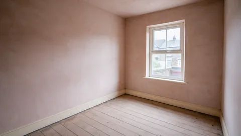 | The 'after' half of the slider, generated from the 'before' picture so it is the same room | Generated for this demo | Illustrative only |
 | A room skimmed out, walls and ceiling, still drying patchy, used on the drying time article | Generated for this demo | Illustrative only |
 | A room hacked back to bare brickwork with the old plaster heaped on a sheet, used on the replastering page | Generated for this demo | Illustrative only |
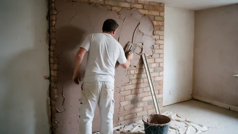 | A thick bonding undercoat going onto bare brick, used on the replastering page and the work page | Generated for this demo | Illustrative only |
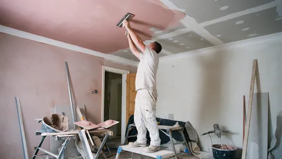 | A ceiling being skimmed overhead off a hop up, used on the ceiling repairs page | Generated for this demo | Illustrative only |
 | Plasterboard being fixed up to the ceiling joists, used on the ceiling repairs and dry lining pages | Generated for this demo | Illustrative only |
 | A ceiling down after a leak, stained and collapsed into a heap, used on the urgent help page and the sagging ceiling article | Generated for this demo | Illustrative only |
 | Plasterboard being screwed to a new timber stud partition, used on the dry lining page | Generated for this demo | Illustrative only |
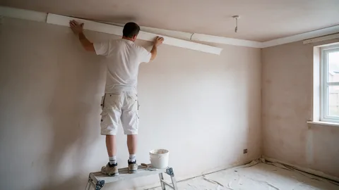 | A length of plain coving being pressed into adhesive at the wall and ceiling junction, used on the coving page | Generated for this demo | Illustrative only |
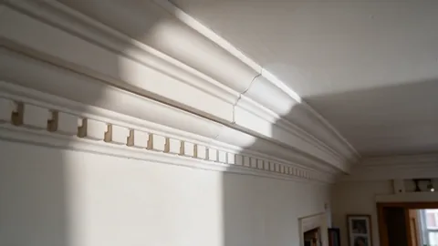 | A deep moulded Victorian cornice with a cracked section in it, used on the coving page and the work page | Generated for this demo | Illustrative only |
 | An old swirl patterned artex ceiling in raking light, used on the artex article | Generated for this demo | Illustrative only |
 | Sand and cement render being floated onto a gable wall, used on the rendering page | Generated for this demo | Illustrative only |
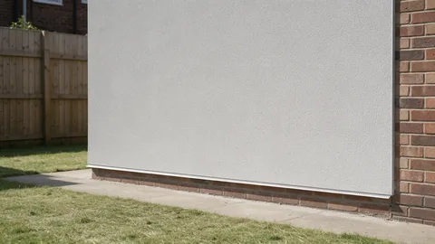 | A finished wall in pale silicone thin coat render with its beads, used on the rendering page | Generated for this demo | Illustrative only |
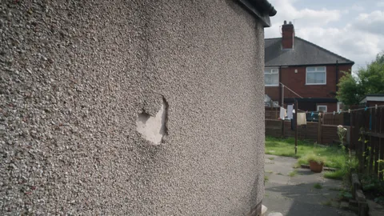 | A pebbledash wall with a sheet of it come away near the corner, used on the rendering page | Generated for this demo | Illustrative only |
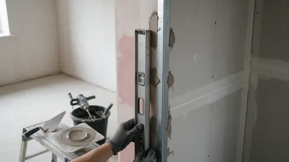 | Angle beads being plumbed on an external plaster corner, used on the replastering and dry lining pages | Generated for this demo | Illustrative only |
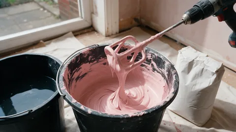 | A paddle mixer lifting out of a bucket of freshly mixed finish plaster, used on the skimming page | Generated for this demo | Illustrative only |
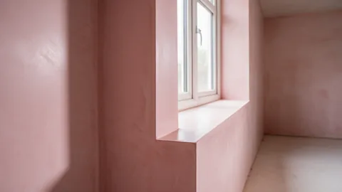 | A finished internal corner and window reveal in raking light, used on the skimming page and the work page | Generated for this demo | Illustrative only |
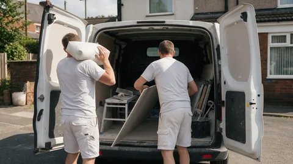 | Two plasterers loading sacks and board into a plain van, used on the about page | Generated for this demo | Illustrative only |
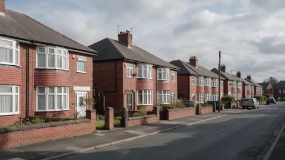 | A street of nineteen thirties semis, used on the home and area pages | Generated for this demo | Illustrative only |
The rest of it
Everything else on the page is drawn in the browser: the brand mark, the icons, the four finishes on the home page, the trowel pass under each heading, the diagrams of what is on your wall and why a ceiling sags, and the five step rail showing what plaster does while it dries. No stock photography, no clip art and no third party images.
Nobody in any picture is identifiable, and no van, sack, bag or tool carries a real name or logo. Every file is a WebP under 200 KB.
The before and after
The pair on the home page is the same room twice. The 'after' picture was generated from the 'before' one, so the window, the proportions and the floorboards all match. It is there to show the thing worth noticing on a tired wall, which is that only one of those faults needed the plaster taking off.
The words
All the copy on this site was written for this demo. The firm, the people, the jobs and the reviews are invented. Anything factual, like why a mist coat has to go on first or why older textured coatings must be tested before they are disturbed, is general trade knowledge rather than advice on your property. There are no prices, no guarantees, no schemes, no qualifications and no response times anywhere on it, on purpose.
The numbers
The firm's number, 01632 960609, comes from the range Ofcom keeps for television and film, so it rings nobody. The email address ends in .example, which cannot receive anything. The only real number anywhere on this site is Clockwork's own, 07460 038202, in the bar at the top and the note at the bottom, and it is labelled as Clockwork's rather than the firm's.
Want one like this for a real firm?
Ring Clockwork on the number in the bar at the top of the page. This demo is here to show what gets built, not to sell you a skim.